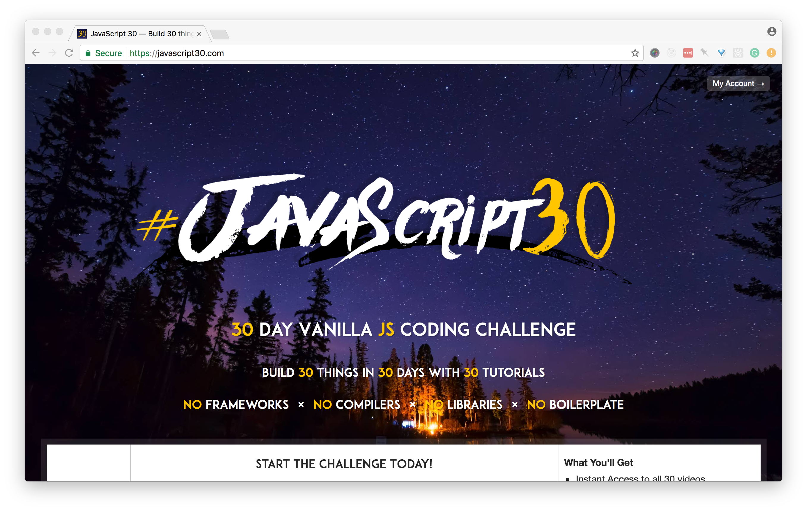

<!doctype html>
<html lang="en">
    <head>
        <meta charset="utf-8">
        <title>Hiring for Candidates</title>
        <link rel="stylesheet" href="./css/reveal.css">
        <link rel="stylesheet" href="./css/theme/black.css" id="theme">
        <link rel="stylesheet" href="./css/highlight/zenburn.css">
        <link rel="stylesheet" href="./css/print/paper.css" type="text/css" media="print">

    </head>
    <body>

        <div class="reveal">
            <div class="slides"><section  data-markdown><script type="text/template">

# Hiring for Candidates

Claudina Sarahe, <a href="https://twitter.com/itsmisscs">@itsmisscs</a>

Notes: Hi, I'm Claudina Sarahe. I'm an independent product consultant. what that means is various things: i help scale products and teams. i work a lot
between design and development but also management.
</script></section><section  data-markdown><script type="text/template">
## My Preferred Gender Pronoun (PGP)?

she/her/they/them


</script></section><section  data-markdown><script type="text/template">
# Things I've done

* Consulting Director Frontend Engineering, Casper
* Co-creator SassConf, Conference for Front-end
* Co-founder and alumna organizer GothamSass
* Co-founder Autotax. Y Combinator Finalist
* 12 years in tech field
* Portuguese classes + woodshop class

Notes: Depending on size ask about them. @todo break out more if time
</script></section><section  data-markdown><script type="text/template">
# Outline: This workshop

* Why I'm passionate about hiring, teams, organizations
* How to Prepare
  * Doing your research
* What to learn

Notes: Outline these experiences from few years hiring at high growth startup
coupled with learnings from organizing and colleagues.
</script></section><section ><section data-markdown><script type="text/template">
## Sustaining inclusive and diverse teams begin with inclusive processes

Notes: You are what you eat adage holds true. I believe that an
in order to have an enjoyable hiring that yields diverse, inclusive, creative,productive teams you must
have an inclusive process and as such a participatory team.
</script></section><section data-markdown><script type="text/template">
## Hiring process is the character of team and color of the company culture

Notes: If you have a hiring process or are putting in a more formal one, start by inviting those that want to be a part of it
</script></section><section data-markdown><script type="text/template">
## Hiring is a two way road for both potential candidates and team

- Balance of the power structure

Notes: You learn about them during this time. By setting your own tenets you're
clearer with what you are looking for

Rachel's tweet here
find more tweets
</script></section><section data-markdown><script type="text/template">
# First Steps

* Define your tenets
* Do your research
</script></section><section data-markdown><script type="text/template">
* Why are you looking to leave your current position? <!-- .element: class="fragment" data-fragment-index="1" -->
* What do you like to do when you aren’t coding (and the answer can be coding)<!-- .element: class="fragment" data-fragment-index="2" -->
* Tell me about a project or moment you were most proud of in the last year<!-- .element: class="fragment" data-fragment-index="3" -->

</script></section></section><section ><section data-markdown><script type="text/template">
# @TODO HERE LIST THE TENETS

- Established guidelines for the role
- Clear roles and responsibilities on the team
- Known hiring process/procedure

Notes: These are the tenets that I believe teams must have in place in order to effectively hire. Guess what? most don't. you can use these as a rubric. what follows are questions you can ask and/or clues to look for to help you get a better understanding of the environment and to help you excel through the fire and brime stone. because, yes, yes, all too often the hiring process is horrible
soul wrenching experience. it is this way for everyone.
</script></section><section data-markdown><script type="text/template">
# Questions

Come prepared

Notes: Skip quickly to research
</script></section></section><section ><section data-markdown><script type="text/template">
# Do your research prior

Notes: Depends a lot what your first touch. If you are applying through an ad,
look up the company team
</script></section><section data-markdown><script type="text/template">
## Researching the team

- Social media presence
- Team page / About us page
  - Makeup of gender
  - Language
- Participation in the community (OSS, Meetups, Conferences)
</script></section></section><section ><section data-markdown><script type="text/template">
## Questions for teams (phone interview/in person)

- What you your core tenets? What qualities do you most value in your team? What are you looking for?
- What is your tech stack?
- Do you have guidelines for the role? What is expected?
* What are some of the tasks this person will be doing? <!-- .element: class="fragment" data-fragment-index="1" -->
* Are you hiring for a specific project? What happens after it ends? <!-- .element: class="fragment" data-fragment-index="2" -->
* Are you filling a specific need? <!-- .element: class="fragment" data-fragment-index="3" -->
- What the current roles and responsibilities of your team?
- What's the hiring process? What can I expect? How long does it typically take? (Ask the hiring manager) Whom can I expect to meet and talk to?

Notes: Most places are not going to be considerate and ask about any needs you have so you must volunteer them. don't be shy. if you can't walk a lot or are injured or you aren't a big morning person, communicate. Ask for the possibilitiy of an afternoon slot. Mention your injury.
</script></section><section data-markdown><script type="text/template">
## Framework agnostic
### Tenet: Simplicity

Core languages of our craft: JS, CSS, HTML

Notes: We valued JS, CSS, HTML. I stand that a good developer can and will know everything. I will forever always test core languages over frameworks. I really think it depends where you are applying
</script></section></section><section  data-markdown><script type="text/template">
# First touch says a lot

Notes: How did they reach to you? How did they treat you? Did they respect your time?
</script></section><section  data-markdown><script type="text/template">
## Follow up if they say "Right fit later".

Notes: So many people I wanted to hire but needed to wait until there was stability. Be sincere about this by working with TS to keep in touch. As candidate, if you really liked it, follow up, even if you do get a job. If no movement after 6 months, tell candidate.
</script></section><section ><section data-markdown><script type="text/template">
## Get feedback by asking for it

Notes: Candidates, ask for feedback. What's one things I could improve on my test? If tenets, feedback becomes really easy to give.
</script></section><section data-markdown><script type="text/template">
## Define your tenets
### What do you want out of the position?

Notes: What do you want to get out of the job? clear: room to grow, better process; for a new dev could be get a job on respectful teams
</script></section><section data-markdown><script type="text/template">
## Ask about day to day

* What's the process for a typical feature or sprint?<!-- .element: class="fragment" data-fragment-index="1" -->
* How do you spend your day?<!-- .element: class="fragment" data-fragment-index="2" -->
* What does a typical day for team member look like?<!-- .element: class="fragment" data-fragment-index="3" -->

Notes: Ask about someone at your level and also ask above is you are looking to grow
</script></section><section data-markdown><script type="text/template">
## Care about your growth
### Ask about mentorship and career growth
</script></section><section data-markdown><script type="text/template">
* Pairing <!-- .element: class="fragment" data-fragment-index="1" -->
* Code review process <!-- .element: class="fragment" data-fragment-index="2" -->
* How are code decisions and standards formed? <!-- .element: class="fragment" data-fragment-index="3" -->
* Learning budget—encouraged to learn<!-- .element: class="fragment" data-fragment-index="4" -->
* Developer ratio (Junior to Senior)<!-- .element: class="fragment" data-fragment-index="5" -->
* Tech stack<!-- .element: class="fragment" data-fragment-index="6" -->

Notes: A job for jobs sake will not help you. Signs to look for.
</script></section></section><section  data-markdown><script type="text/template">
## Be open to new languages

Notes: Sometimes the way in is with something else that opens a portal
</script></section><section  data-markdown><script type="text/template">
# Reflecting on how I got a foothold

* Creating French graphics in Photoshop
* Manual data entry and small bug fixes

</script></section><section  data-markdown><script type="text/template">
## My own small independent project

Notes: Nice segue way to...
</script></section><section ><section data-markdown><script type="text/template">
# Preparing for code challenge

Notes: Code challenges. Different everywhere. Vary a lot by team. I
believe that their design is indicative of the team structure.
</script></section><section data-markdown><script type="text/template">
## Timed challenges

Practice, practice, practice.

* JavaScript 30 Challenge

</script></section><section data-markdown><script type="text/template">
## Take home challenge

More realistic of feature work
Higher expectation based on time
Make a schedule
Clarify any directions after you receive it
Communicate if you need more time
Be ready to communicate your choices and direction
</script></section><section data-markdown><script type="text/template">
## ~Whiteboarding~

Notes: You are not alone in thinking these are horrible
</script></section></section><section  data-markdown><script type="text/template">
## Repos of companies that do not whiteboard
</script></section><section  data-markdown><script type="text/template">
### If if you do end up with one,

Test your logic and reasoning. Show your thought pattern.
</script></section><section ><section data-markdown><script type="text/template">
# Tips for Code Challenges

Notes: I'm a bit proponent of take home code challenges. while they can take longer they offer a better view of the candidate
</script></section><section data-markdown><script type="text/template">
## Biggest challenge:

Not demonstrating a strength
</script></section><section data-markdown><script type="text/template">
## Solution: Provide a `recap.md`

Your opportunity to give a bit more context into your code challenge

* What went well? <!-- .element: class="fragment" data-fragment-index="1" -->
* What would you improve given/more time resources?<!-- .element: class="fragment" data-fragment-index="2" -->
* Do you have any feedback on the challenge (what would you change, improve, keep…)?<!-- .element: class="fragment" data-fragment-index="3" -->

Notes: Anecdote about how got this from a candidate. These are great way to
provide more perspective about your work
</script></section><section data-markdown><script type="text/template">
@todo examples of recaps
</script></section></section><section ><section data-markdown><script type="text/template">
## Documentation
### Does your project include a `README.md`?

Notes: how detailed does it get. if you do something different, note it. documentation helps people.
</script></section><section data-markdown><script type="text/template">
@TODO Examples of good readme / bad readme is project directory without a readme
</script></section></section><section ><section data-markdown><script type="text/template">
# Directory Organization

Notes: Lots of patterns here. Here's good vs signs of lack of organization
</script></section><section data-markdown><script type="text/template">
## Common patterns

@TODO BUILD OUT Add more examples

Within the root folder:

* Core code files: `src/` or `app/` <!-- .element: class="fragment" data-fragment-index="1" -->
* Compiled files: `dist`, `public/`, `build/` <!-- .element: class="fragment" data-fragment-index="2" -->
</script></section><section data-markdown><script type="text/template">
### Example: Good Directory Structure

```
app
├── js
│   │── vendor/
│   │   ├── jquery.js
│   └── main.js
├── css
│   └── main.css
├── views
│   └── index.html
├──
dist
├── // compiled assets

```
</script></section></section><section ><section data-markdown><script type="text/template">
# Consistency

- Code
- Naming
- File
* Spacing <!-- .element: class="fragment" data-fragment-index="1" -->
* Indentation<!-- .element: class="fragment" data-fragment-index="2" -->
* Stale code (e.g. commented out)<!-- .element: class="fragment" data-fragment-index="3" -->
</script></section><section data-markdown><script type="text/template">
## Code documentation

JSDOC style syntax across all file types


</script></section><section data-markdown><script type="text/template">
# CSS Linters & Style Guides
</script></section><section data-markdown><script type="text/template">
### Harry Roberts, CSS Guidelines


</script></section><section data-markdown><script type="text/template">
## Hugu G, Sass Guidelines


</script></section><section data-markdown><script type="text/template">
## MDO, Code Guide


</script></section><section data-markdown><script type="text/template">
## Stylelint


</script></section><section data-markdown><script type="text/template">
## csscomb


</script></section><section data-markdown><script type="text/template">
## Other CSS/Sass Linters

* [Sass-lint](https://github.com/sasstools/sass-lint)
* [SCSS Lint](https://github.com/brigade/scss-lint)
</script></section><section data-markdown><script type="text/template">
## JS Linters

* Plugins available for most editors
</script></section><section data-markdown><script type="text/template">
## ESLint


Notes: Pluggable different standards
</script></section><section data-markdown><script type="text/template">
## AirBnb Code Standards


</script></section><section data-markdown><script type="text/template">
## Lots of standards

* [JS Standard](https://github.com/feross/standard)
* [Google](https://github.com/google/eslint-config-google)
</script></section></section><section  data-markdown><script type="text/template">

@TODO react consistency patterns / links
</script></section><section  data-markdown><script type="text/template">
## Naming is hard, steal

* Clear, concise, patterns <!-- .element: class="fragment" data-fragment-index="1" -->
* Remix from other frameworks <!-- .element: class="fragment" data-fragment-index="2" -->

Notes: Check out semantic UI or frameworks for ideas. visit sites you like.
</script></section><section ><section data-markdown><script type="text/template">
## Command & Understanding of HTML

* Are you using the most semantically appropriate element? <!-- .element: class="fragment" data-fragment-index="1" -->
* Is accessibility a fore or afterthought? <!-- .element: class="fragment" data-fragment-index="2" -->

Notes: Very challenging.
</script></section><section data-markdown><script type="text/template">
## Know your tags: #1

```
<div class="price">
  ${{ price }}
</div>
```
</script></section><section data-markdown><script type="text/template">
## Answer: Daily Double

```
<label name="price-field">Cost</label>
<output for="price-field" name="price" class="price">
  ${{ price }}
</output>
```

Represents the result of a calculation or user action.

Notes: Okay. Esoteric. But this isn't..
</script></section><section data-markdown><script type="text/template">

```
<div class="btn">
  Get it
</div>
```

## `<div>` is not `<button>`
</script></section><section data-markdown><script type="text/template">
## Know Your Tags: #2

_(HTML is more than divs)_

```html
<div class='item'>
  <div class='item__name'>{{ name }}</div>
  <div class='item_description'>{{ description }}</div>
  <div class='item_price'>{{ price }}</div>
  <div class='item__purchase' data-name='{{ name }}' data-price='{{ price }}'>
    <div class='btn'>
      Get it
    </div>
  </div>
</div>
```
</script></section><section data-markdown><script type="text/template">
```html
<article class='item'>
  <h2 class='item__name'>{{ name }}</h2>
  <p class='item_description'>{{ description }}</p>
  <output for="price-field" name="price" class="price">${{ price }}</output>
  <div class='item__purchase' data-name='{{ name }}' data-price='{{ price }}'>
    <button class='btn'>
        Get it
    </button>
  </div>
</article>
```
</script></section><section data-markdown><script type="text/template">
## Accessibility

* Know A and AA
* Invest in Aria
</script></section><section data-markdown><script type="text/template">
## [Heydon works Practical Accessibility](http://heydonworks.com/practical_aria_examples/)
</script></section><section data-markdown><script type="text/template">
## [Marcy Sutton](http://heydonworks.com/practical_aria_examples/)

</script></section><section data-markdown><script type="text/template">
# CSS

* Understanding of specificity<!-- .element: class="fragment" data-fragment-index="1" -->
* CSS Architecture<!-- .element: class="fragment" data-fragment-index="2" -->
* Organization<!-- .element: class="fragment" data-fragment-index="3" -->
* Style<!-- .element: class="fragment" data-fragment-index="4" -->
</script></section><section data-markdown><script type="text/template">
## Over-qualifying elements

```
button.delete {

}
```
<!-- .element: class="fragment" data-fragment-index="1" -->

</script></section><section data-markdown><script type="text/template">
## Do you style IDs?

NAY<!-- .element: class="fragment" data-fragment-index="1" -->

</script></section><section data-markdown><script type="text/template">
## Empty Rule Sets

Don't leave empty rulesets

```
.price {
}
```

</script></section><section data-markdown><script type="text/template">
## Know your CSS units

Show consistency or understanding of usage patterns

```
.sidebar {
  margin-left: 3%;
  padding: 1.5em 40px;
}
```
----

Notes: Understand what power each unit gives you and why to use it
</script></section></section><section ><section data-markdown><script type="text/template">

</script></section><section data-markdown><script type="text/template">
> you still keep px size adjustments at the document level so you can make
easy/efficient sweeping size changes. But then each module on the page has
a font-size set in rem. Actual text elements (h1, h2, p, li, whatever),
if you size them at all, are sized in em, and thus become relative to the module.
</script></section><section data-markdown><script type="text/template">
## Use Autoprefixer for vendor prefixing

No need to handwrite vendor prefixes.

```css
@mixin box-sizing( $type: border-box ) {
    -webkit-box-sizing: $type;
       -moz-box-sizing: $type;
         -o-box-sizing: $type;
        -ms-box-sizing: $type;
            box-sizing: $type;
}

*,
*::before,
*::after {
  @include box-sizing(border-box);
}
```

Notes: If you are using a build process. Autoprefixer is available for most build processes
</script></section><section data-markdown><script type="text/template">
```css
@mixin box-sizing( $type: border-box ) {
  box-sizing: $type;
}

*,
*::before,
*::after {
  @include box-sizing(border-box);
}
```
</script></section><section data-markdown><script type="text/template">
## CSS Architecture

What is CSS Architecture? What do we mean when we say it?

Notes: some are more about styles and less prescriptive about organization. others are more coupled.
</script></section><section data-markdown><script type="text/template">
## CSS Patterns

* OOCSS <!-- .element: class="fragment" data-fragment-index="1" -->
* SMACSS <!-- .element: class="fragment" data-fragment-index="1" -->
* BEM <!-- .element: class="fragment" data-fragment-index="2" -->
* CSS Modules <!-- .element: class="fragment" data-fragment-index="3" -->
* ITCSS <!-- .element: class="fragment" data-fragment-index="4" -->
* ExpressiveCSS <!-- .element: class="fragment" data-fragment-index="5" -->
* FunctionalCSS <!-- .element: class="fragment" data-fragment-index="6" -->
</script></section></section><section ><section data-markdown><script type="text/template">
# stylelint
</script></section><section data-markdown><script type="text/template">
# CSS Modules

</script></section><section data-markdown><script type="text/template">
## Solve problem at hand first
### before adding complexity
</script></section><section data-markdown><script type="text/template">
# Gulp.js for making builds

* Easy to grok <!-- .element: class="fragment" data-fragment-index="1" -->
* Lots of tutorials <!-- .element: class="fragment" data-fragment-index="2" -->
* More intuitive working with HTML templates <!-- .element: class="fragment" data-fragment-index="3" -->
* Gulp 4.0.0 is stagnant
</script></section><section data-markdown><script type="text/template">
### But isn't Webpack the thing?!?!

Notes: If react job or JS heavy, sure
</script></section><section data-markdown><script type="text/template">
## Avoid coupling HTML + JS

```
$(".cart .count").html(count);
$(".cart .total").html(total);
```

Notes: Going to refactor.... better
</script></section><section data-markdown><script type="text/template">
## Use JS Selectors

```
$(".js-cart .js-count").html(count);
$(".js-cart__count").html(count);
```
</script></section><section data-markdown><script type="text/template">
# Add linters to your code editors


## Hack the industry pulse

* Bleeding edge. Hottest. (0-18 months)
* Best practices (3+ years)
* What’s on the mind of the community?

Notes: Todo show how to do this...
</script></section><section data-markdown><script type="text/template">
## Always test your code before submitting

Avoid the dreaded `-g`

* Wipe your node modules
* Re-install node version
* Ask a friend to try out
</script></section><section data-markdown><script type="text/template">
## Manage node versions

* nvmrc
* n
</script></section></section><section ><section data-markdown><script type="text/template">
## Give credit were it is due
### We all copy pasta

Notes: Include license files or mentions in code comments. Add mention in your
readme. This also shows that you keep up.
</script></section><section data-markdown><script type="text/template">
## Drive & Passion
### Show it

<aside class="notes"></aside></script></section><section data-markdown><script type="text/template">
* Why are you looking to leave your current position? <!-- .element: class="fragment" data-fragment-index="1" -->
* What do you like to do when you aren’t coding (and the answer can be coding)<!-- .element: class="fragment" data-fragment-index="2" -->
* Tell me about a project or moment you were most proud of in the last year<!-- .element: class="fragment" data-fragment-index="3" -->
</script></section></section><section ><section data-markdown><script type="text/template">
> I'm still learning - Michael Angelo

Notes: An invest in learning shows that you are serious about advancing
</script></section><section data-markdown><script type="text/template">
# Invest in learning
</script></section><section data-markdown><script type="text/template">
# How do you keep up with the industry?

Notes: If a scientist doesn't keep up with research in their field,
they will become obsolete. This was one of my pass/fail questions. Why? If you
are not invested in learning, you will not be an active team member.
</script></section><section data-markdown><script type="text/template">
## Find your method

* Digest Lists & Newsletter
* Podcasts
* Meetups
* Conferences (volunteer at them)
* Twitter accounts and lists
* Slack groups
* Medium
* Books
</script></section><section data-markdown><script type="text/template">
* Panda
* Sidebar
* Awesome list repos
* Callback Women
* League of Lady Coders
* GothamSass
* BoroughJS (Queens, Brooklyn, Manhattan, JerseyScript)
</script></section><section data-markdown><script type="text/template">
# Learning

- (steal some ideas form artist way about making lists of things you feel iffy about.
challenge yourself to spend time on 1-2)
- Look at local ngo or business in your neighborhood (my first site was for a professor)
</script></section><section data-markdown><script type="text/template">
## Setup a simple build process

* Process CSS <!-- .element: class="fragment" data-fragment-index="1" -->
* Transpile JavaScripts <!-- .element: class="fragment" data-fragment-index="2" -->
* Compile HTML Templates <!-- .element: class="fragment" data-fragment-index="3" -->
* Minify and prepare for production <!-- .element: class="fragment" data-fragment-index="4" -->
</script></section><section data-markdown><script type="text/template">
## Javascript 30 Challenge


</script></section><section data-markdown><script type="text/template">
## http://bit.ly/awesomecasts
</script></section><section data-markdown><script type="text/template">
## Toolsday.io
</script></section><section data-markdown><script type="text/template">
## Teach and/or Volunteer for local code programs
</script></section><section data-markdown><script type="text/template">
### BlackGirlsCode NYC


</script></section><section data-markdown><script type="text/template">
### Coder Dojo NYC


</script></section><section data-markdown><script type="text/template">
## Invest in learning
</script></section><section data-markdown><script type="text/template">
## Refactor old code

@TODO Martin Fowler quote
</script></section><section data-markdown><script type="text/template">
## Contribute to OSS project

- Many have https://github.com/MunGell/awesome-for-beginners
</script></section><section data-markdown><script type="text/template">
## Show activity

* Are you going to meetups?
* Do you have code examples?

</script></section><section data-markdown><script type="text/template">

## Pulse

(Remember, a solid foundation is required to build a tower)

* Async/wait
* CSS Grids
* Immutable Data Structures
* Functional all the things
* Flexbox
* Progressive Web Apps
* Design Systems
* Performance
</script></section></section></div>
        </div>

        <script src="./lib/js/head.min.js"></script>
        <script src="./js/reveal.js"></script>

        <script>
            function extend() {
              var target = {};
              for (var i = 0; i < arguments.length; i++) {
                var source = arguments[i];
                for (var key in source) {
                  if (source.hasOwnProperty(key)) {
                    target[key] = source[key];
                  }
                }
              }
              return target;
            }

            // Optional libraries used to extend on reveal.js
            var deps = [
              { src: './lib/js/classList.js', condition: function() { return !document.body.classList; } },
              { src: './plugin/markdown/marked.js', condition: function() { return !!document.querySelector('[data-markdown]'); } },
              { src: './plugin/markdown/markdown.js', condition: function() { return !!document.querySelector('[data-markdown]'); } },
              { src: './plugin/highlight/highlight.js', async: true, callback: function() { hljs.initHighlightingOnLoad(); } },
              { src: './plugin/zoom-js/zoom.js', async: true },
              { src: './plugin/notes/notes.js', async: true },
              { src: './plugin/math/math.js', async: true }
            ];

            // default options to init reveal.js
            var defaultOptions = {
              controls: true,
              progress: true,
              history: true,
              center: true,
              transition: 'default', // none/fade/slide/convex/concave/zoom
              dependencies: deps
            };

            // options from URL query string
            var queryOptions = Reveal.getQueryHash() || {};

            var options = {"transition":"slide"};
            options = extend(defaultOptions, options, queryOptions);
            Reveal.initialize(options);
        </script>
        
    </body>
</html>
